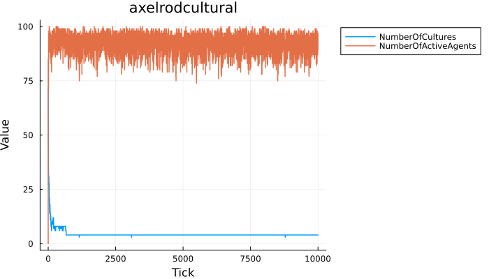
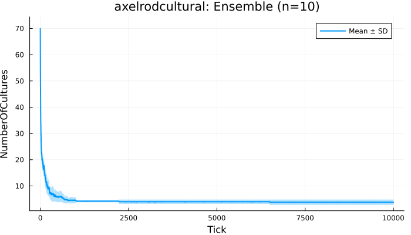
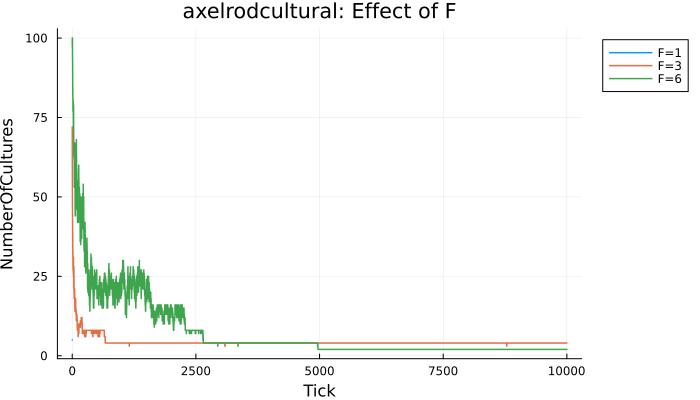

AxelrodCultural
Overview
WHAT IS IT?
This is Axelrod’s model of cultural dissemination. See Reference at the end. It is an agent-model designed to investigate the dissemination of culture among interacting agents on a society.
Axelrod model consists in a population of agents, each one occupying a single node of a square network of size L. The culture of an agent is described by a vector of F integer variables called ‘features’. Each feature can assume q different values between 0 and q-1. In the original Axelrod model the interaction topology is regular bounded (non-toroidal). Each agent can interact only with its four neighbors (von Neumann neighborhood).
Dynamics are based on two main mechanisms: (1) agents tend to chose culturally similar neighbors as interaction partners (homophily) and (2) during interaction agents influence each other in a way that they become more similar.
The interplay of these mechanisms either leads to cultural homogeneity (all agents are perfectly similar) or the development of culturally distinct regions (multicultural society). The model allows studying to which degree the likelihood of these two outcomes depends on the size of the population, the number of features the agents hold, the number of traits (values) each feature can adopt and the neighborhood size (interaction range).
HOW IT WORKS
Each agent is located at each patch of the grid with the default shape. Agents hold a number of features F. Each feature is a nominal variable that can adopt a certain number of values (called traits) from 0 to q - 1. Initially, agents adopt randomly chosen traits. At each time step (tick) agents update its cultural value in an asyncronous-random updating. That is that the computer makes a list where all agents are included in a random order and the list is followed until all agents are choosen. Each agent them become a focal agent and then, one of the focal agent’s neighbors is selected at random. Neighbor agents are those who are in distance less than the value of the parameter ‘radius’. If radius = 1, then it is von Neumann neighborhood. The cultural overlap between these two agents is computed. The cultural overlap is equal to the percentage of similar features. With probability similar to the overlap, the two agents interact. Otherwise, the program continues with the next agent until the list is exhausted and it follows the next time step (next tick). An interaction consists of selecting at random one of the features on which the two agents differ and changing the focal agent’s feature to the interaction partner’s trait. Note that if the overlap is zero, interaction is not possible and the respective agents refuse to influence each other.
THINGS TO NOTICE
Here we have setted toroidal boundaries, but the simulation can properly function as well in the original non-toroidal one. In our case, the four von Neumann neighbors are at distance ‘radius’ one. The model permits to change the value of ‘radius’ to explore the implications of other neighborhood sizes. It is also implemented the possiblity for agents to move.
At the end, in the absorving final state, when calculating for the number of regions, the model makes different visible networks which include all neighbors agents with the same culture. Then, when counting the number of cultural domains it is considered that two domains are different if they are not connected, even if agents in both domains share same culture.
Note also that two agents could have similar (but with zero overlap) cultural values and then, its corresponding colors could be so similar that it could induce to think that the cultural values are the same. Just check to see that it is not.
THINGS TO TRY
Vary the population size, the number of features, the number of traits, the range of interactions and also the movement of the agents. The program stops when the first absorving state is found (the number of active agents reaches zero), even if the agents are moving. Try toroidal and not toroidal borders activating ‘World wraps horizontally’ and ‘World wraps vertically’ in the Settings menu.
EXTENDING THE MODEL
Many extensions of this model have been proposed (see e.g. references below). One of the most interesting is certainly the inclusion of ‘social influence’ instead of dyadic interaction. It has been shown that this makes the persistence of different cultural region very strong.
RELATED MODELS
There are a lot of related models. You can follow the References here after or in the literature.
CREDITS AND REFERENCES
This model has been developed by Robert Axelrod. It was implemented by Arezky H. Rodríguez (arezky@gmail.com).
This is the paper where Axelrod presented the model:
Axelrod, R. 1997. “The dissemination of culture - A model with local convergence and global polarization.” Journal of Conflict Resolution 41:203-226.
Extensions can be found at:
Flache, A., and M. Macy. 2008. “Local Convergence and Global Diversity: From Interpersonal to Social Influence”, Journal of Conflict Resolution December 2011 vol. 55 no. 6 970-995
Flache, A., and M. Macy. 2006. “What sustains cultural diversity and what undermines it? Axelrod and beyond.” arXiv:physics/0604201v1 [physics.soc-ph].
Flache, A., and M. Macy. 2007. “Local Convergence and Global Diversity: The Robustness of Cultural Homophily.” arXiv:physics/0701333v1 [physics.soc-ph].
Klemm, K., V. M. Eguiluz, R. Toral, and M. S. Miguel. 2003. “Global culture: A noise-induced transition in finite systems.” Phys. Rev. E 67,
Klemm, K., V. M. Eguiluz, R. Toral, and M. San Miguel. 2003. “Nonequilibrium transitions in complex networks: A model of social interaction.” Phys. Rev. E 67, 026120.
2013 by Arezky H. Rodríguez (arezky@gmail.com).
Parameters
| Parameter | Type | Default | Description |
|---|---|---|---|
F | Int | 3 | number of cultural features (traits) |
q | Int | 5 | number of values per trait |
world_size | Int | 10 | 10x10 grid |
max_ticks | Int | 10000 | max ticks |
Source Code
The Julia code to run this model:
using ArkModelZoo
_, trajectory = run_axelrodcultural()Time Series

Ensemble Runs
Ten replicates with different random seeds, showing mean ± standard deviation.

Parameter Sensitivity
Varying F.

Appendix: Source Code
This model is implemented in the Ark.jl Entity-Component-System (ECS) framework. The code is split into five files, each with a distinct role:
- Parameters: a mutable struct holding all configurable values.
- Components: lightweight data types attached to individual entities (agents).
- Resources: world-level shared state accessible to all systems.
- Systems: functions that operate on entities each tick, defining model behavior.
- Model: wiring that assembles the world, registers resources and systems, and provides the run entry point.
Parameters (parameters.jl)
The parameter struct uses @kwdef so that every field has a default value and can be overridden by keyword. These defaults match the original NetLogo model’s slider settings.
Base.@kwdef mutable struct AxelrodParams
F::Int = 3 # number of cultural features (traits)
q::Int = 5 # number of values per trait
world_size::Int = 10 # 10x10 grid
max_ticks::Int = 10000
seed::Int = 42
endComponents (components.jl)
Components are lightweight data types attached to individual entities (agents). Mutable structs hold per-entity state, while empty tag structs act as markers for the ECS query system to efficiently filter entities.
# Axelrod Cultural Dissemination is purely patch-based
struct AxelrodDummy endResources (resources.jl)
Resources are world-level singletons shared across all systems, used for global state and aggregate statistics.
mutable struct AxelrodGrid
width::Int
height::Int
traits::Array{Int, 3} # (F, width, height) — trait values 0..q-1
end
function AxelrodGrid(width::Int, height::Int, F::Int)
AxelrodGrid(width, height, zeros(Int, F, width, height))
end
mutable struct AxelrodStats
number_of_cultures::Int
number_of_active_agents::Int
end
AxelrodStats() = AxelrodStats(0, 0)Systems (systems.jl)
Systems contain the model logic and execute in a defined order each tick. Each system struct implements either initialize! (run once at setup) or update! (run every tick).
# --- Initialization ---
struct InitAxelrodSystem <: System end
function initialize!(::InitAxelrodSystem, world::World)
params = get_resource(world, AxelrodParams)
rng = get_resource(world, RNGResource).rng
grid = get_resource(world, AxelrodGrid)
stats = get_resource(world, AxelrodStats)
# Each patch gets random traits 0..q-1
for x in 1:grid.width, y in 1:grid.height
for f in 1:params.F
grid.traits[f, x, y] = rand(rng, 0:params.q-1)
end
end
# Count initial cultures
_axelrod_count_cultures!(stats, grid, params)
return nothing
end
function _axelrod_culture_id(grid::AxelrodGrid, x::Int, y::Int, q::Int)
F = size(grid.traits, 1)
id = 0
for f in 1:F
id = id * q + grid.traits[f, x, y]
end
return id
end
function _axelrod_count_cultures!(stats::AxelrodStats, grid::AxelrodGrid, params::AxelrodParams)
cultures = Set{Int}()
for x in 1:grid.width, y in 1:grid.height
push!(cultures, _axelrod_culture_id(grid, x, y, params.q))
end
stats.number_of_cultures = length(cultures)
end
# --- Axelrod Update ---
# Each tick: ask patches in random order, each patch tries to interact with a Von Neumann neighbor.
# Non-wrapping grid.
struct AxelrodUpdateSystem <: System end
function update!(::AxelrodUpdateSystem, world::World)
params = get_resource(world, AxelrodParams)
rng = get_resource(world, RNGResource).rng
grid = get_resource(world, AxelrodGrid)
stats = get_resource(world, AxelrodStats)
w, h = grid.width, grid.height
F = params.F
active_agents = 0
# Random patch order (ask patches)
patch_order = randperm(rng, w * h)
for idx in patch_order
x = mod1(idx, w)
y = div(idx - 1, w) + 1
# Get Von Neumann neighbors (non-wrapping)
neighbors = Tuple{Int,Int}[]
x > 1 && push!(neighbors, (x - 1, y))
x < w && push!(neighbors, (x + 1, y))
y > 1 && push!(neighbors, (x, y - 1))
y < h && push!(neighbors, (x, y + 1))
# Reservoir sample one active neighbor (0 < overlap < F)
chosen_nx, chosen_ny = 0, 0
chosen_overlap = 0
count_active = 0
for (nx, ny) in neighbors
overlap = 0
for f in 1:F
if grid.traits[f, x, y] == grid.traits[f, nx, ny]
overlap += 1
end
end
if overlap > 0 && overlap < F
count_active += 1
# Reservoir sampling: replace with probability 1/count_active
if rand(rng, 1:count_active) == 1
chosen_nx, chosen_ny = nx, ny
chosen_overlap = overlap
end
end
end
if count_active > 0
active_agents += 1
# With probability overlap/F, adopt one differing trait
if rand(rng) < chosen_overlap / F
# Find differing traits
differing = Int[]
for f in 1:F
if grid.traits[f, x, y] != grid.traits[f, chosen_nx, chosen_ny]
push!(differing, f)
end
end
if !isempty(differing)
f_pick = differing[rand(rng, 1:length(differing))]
grid.traits[f_pick, x, y] = grid.traits[f_pick, chosen_nx, chosen_ny]
end
end
end
end
stats.number_of_active_agents = active_agents
return nothing
end
# --- Stats ---
struct AxelrodStatsSystem <: System end
function update!(::AxelrodStatsSystem, world::World)
grid = get_resource(world, AxelrodGrid)
params = get_resource(world, AxelrodParams)
stats = get_resource(world, AxelrodStats)
_axelrod_count_cultures!(stats, grid, params)
return nothing
end
# --- Termination ---
struct AxelrodTerminationSystem <: System end
function update!(::AxelrodTerminationSystem, world::World)
stats = get_resource(world, AxelrodStats)
params = get_resource(world, AxelrodParams)
tick = get_resource(world, Tick)
if stats.number_of_active_agents == 0 || tick.tick + 1 >= params.max_ticks
get_resource(world, Terminate).stop = true
end
return nothing
endModel (model.jl)
The model file assembles all pieces: it creates the ECS World with the required component types, registers resources, builds the Scheduler with systems in execution order, and exposes the public run entry point. The observer pattern records the trajectory each tick.
function axelrodcultural_world(; initial_capacity::Int = 128)
return World(
AxelrodDummy;
initial_capacity = initial_capacity,
allow_mutable = true,
)
end
function axelrodcultural_systems()
return (
InitAxelrodSystem(),
AxelrodUpdateSystem(),
AxelrodStatsSystem(),
AxelrodTerminationSystem(),
)
end
function axelrodcultural_model(params::AxelrodParams = AxelrodParams())
world = axelrodcultural_world()
_add_standard_resources!(world, params)
add_resource!(world, AxelrodGrid(params.world_size, params.world_size, params.F))
add_resource!(world, AxelrodStats())
scheduler = Scheduler(world, axelrodcultural_systems())
initialize!(scheduler)
return scheduler
end
struct AxelrodObserver end
function axelrodcultural_headers(::AxelrodObserver)
return ["NumberOfCultures", "NumberOfActiveAgents"]
end
function axelrodcultural_values(::AxelrodObserver, world::World)
stats = get_resource(world, AxelrodStats)
return Float64[stats.number_of_cultures, stats.number_of_active_agents]
end
function run_axelrodcultural(; params::AxelrodParams = AxelrodParams(), observe::Bool = true)
return _run_model(axelrodcultural_model, AxelrodObserver(), axelrodcultural_values; params, observe)
end